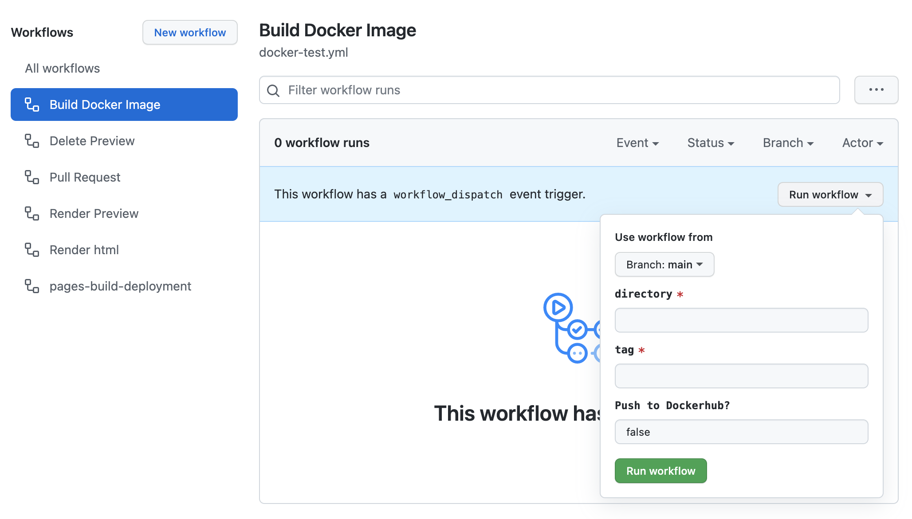

Customizing Docker
For courses that require running example code, it is strongly advisable to utilize a Docker image during development. This ensures consistent software versions among course developers.
Using the base_ottr Docker image
If your course doesn’t require any additional packages to run, then you do not need to set up Docker locally but this Docker image jhudsl/base_ottr will run and re-render all of your changes as you add them.
We recommend using the jhudsl/base_ottr:main tagged image instead of the latest version. The main image is ready for use, while the latest may be under development. All GitHub Actions by default use the jhudsl/base_ottr:main.
If you are new to Docker, you may find it helpful to read this introduction to Docker.
- If you don’t have one, you will need to sign up with a Docker account.
- If you haven’t installed Docker desktop (or need to update it), you can do so here.
If your Docker desktop is running, you should see a Docker whale in your tool bar. On Macs, this will be on the bar on the top of your screen; in Windows, on the bottom right.
A Docker image is similar to a virtual machine - it contains preinstalled software in a preconfigured environment. Docker images can be downloaded from DockerHub, or you can create your own.
We have created the base_ottr:main image as a starting point; you can download it from jhudsl/base_ottr:main on DockerHub using the docker pull command we have below. To pull the docker image associated with this template, you can run this command below in your command line. This may take a while:
docker pull jhudsl/base_ottr:mainThis pulls the base_ottr:main image from Docker Hub and copies it to your computer. It will be placed in your local collection of Docker images, managed by Docker (not in your working directory). If you get an error, it may be because you forgot to have your Docker desktop running… see above.
To use the Docker image associated with the course template, first navigate to the the top of this GitHub repository. Now you can start up the Docker container using the command below.
This runs your local copy of the base_ottr:main image (which you downloaded from DockerHub). The option -v $PWD:/home/rstudio mounts pwd (this repo) and makes it available at /home/rstudio within the container. Replace all of <CHOOSE_PASSWORD> (including the < and >) with a password of your choosing.
On a Mac:
docker run -it -v $PWD:/home/rstudio -e PASSWORD=<CHOOSE_PASSWORD> -p 8787:8787 jhudsl/base_ottr:mainOn a Windows:
docker run -it -v %CD%:/home/rstudio -e PASSWORD=<CHOOSE_PASSWORD> -p 8787:8787 jhudsl/base_ottr:mainDo not close this window, but you can minimize it. Open up a new command line window and run the command: docker ps, you should see a container is up and running!
Couple of handy Docker commands:
- To stop your Docker container, run
docker psto obtain the docker container ID. Then you can use that ID to rundocker stop <CONTAINER_ID>. - To remove a docker image (which you may need to do from time to time to clear out space), you can run
docker image lsto see all your current images. Then you can run eitherdocker image rm <IMAGE_ID>. - If you really need to clear out space, you can follow this StackOverflow post on how to remove all images and all containers.
To obtain further information on utilizing Docker, you can refer to their comprehensive documentation available here.
Optionally run RStudio from the Docker container
In a web browser navigate to the following to open an RStudio instance that is run from your Docker container.
localhost:8787To log in, you’ll need to use rstudio as the username and whatever password you put for <CHOOSE_PASSWORD> in the above command.
Starting a new Docker image
Should you find that your course needs additional packages beyond what’s included in the template, you should probably start a new Docker image and you’ll need to do these steps to get this going:
There’s a library of ottr-ready docker images that you can see here. If you would like to contribute your own customized docker image that works with OTTR, please file a pull request!
- Create a Dockerhub account if you don’t have one.
- Create a new Docker image on your Dockerhub account. Follow these instructions if you don’t know how to do that.
- Set up Dockerhub secrets in your repository or organization.
- Update the Github actions workflows accordingly.
- Edit the Dockerfile in your repository.
Updating workflows for new Docker image
To make sure that your new Docker image is being used for rendering in the GitHub actions, you need to change the rendering-docker-image: from the default of jhudsl/base_ottr:main and replace it with your docker image tag.
Then start a new branch so that you can submit a new pull request with your changes.
Now, when you file a pull request, the Dockerfile build for your docker image will be tested automatically by the GitHub actions if docker-test is set to yes. The default is docker-test: no
Modifying the Dockerfile for a new image
Read this chapter for instructions on how to modify Docker images
You will probably want to create your Docker image by using the jhudsl/base_ottr:main as your base – this means that all the packages that are in our jhudsl/base_ottr:main image will be included in the Docker image you build.
FROM jhudsl/base_ottr:mainYou can take a look at this Dockerfile template we’ve set up here (note that the commands would need to be uncommented and real package names put in place of package_name’s).
Template commands for adding packages to the Dockerfile
This section gives you the basics on what it looks like to add new packages to your new Docker image.
CRAN Packages:
For R packages installed from CRAN, you can add to the running vector list of R packages.
Bioconductor Packages:
To add an R package from Bioconductor, you can follow this kind of format:
RUN Rscript -e "options(warn = 2); BiocManager::install( \
c('limma', \
'newpackagename')
Python Packages:
To add a Python package, you will need to add pip3 to install Python packages using this format:
RUN pip3 install \
"somepackage==0.1.0"Testing a modified Docker image
Read this chapter for instructions on how to modify Docker images
When you’ve added a package to the Dockerfile, you may want to check that it builds successfully before it’s added to your repository. You can include changes to your Dockerfile in a pull request which will trigger an automatic testing of building it.
Read this chapter for more tips on how to modify Docker images
OR
If you prefer to test it locally, then you can follow these steps.
First create a GITHUB token file by making a token and copying a pasting it into a plain text file named docker/git_token.txt. (Make sure you do not push this to github and possibly delete it after testing your docker image build!)
Then you’ll need to rebuild the Docker image using this command after you move into the docker directory) (But replace the <TAG_FOR_COURSE> with the tag for your new image including dropping the < and >:
docker build -f Dockerfile . -t <TAG_FOR_COURSE>If it fails, often the issue is a missing dependency. Take a look at the error messages and see if you can determine the issue with some Googling. Also be sure that all your directories and files are named correctly.
Once it builds successfully, run the above command with the new name for your docker image make sure that the tag does not have upper case characters):
docker build -f Dockerfile . -t jhudsl/<TAG_FOR_COURSE>Pushing the Docker image
For any changes you make to your Docker image to take effect in your repository’s github actions and workflows, you must push your updated docker image to Dockerhub. There are two different ways you can push your Docker image.
Locally, you can push your updated image to Dockerhub using (make sure that the tag does not have upper case characters):
docker push jhudsl/<TAG_FOR_COURSE>OR
You can use GitHub actions to do this by going to your course’s GitHub repository, go to Actions and then to Test build of Dockerfile.
Click on run workflow type in true underneath Push to Dockerhub?.
Then click Run. If your Dockerfile builds an image successfully it will automatically be pushed to Dockerhub.
Github actions for handling your Docker image
For your personalized docker image, you can store the Dockerfile anywhere. In order for OTTR/GitHub actions to use it, it must be pushed to Dockerhub.
It may be easiest to store it in the OTTR-made repository you are working from.
In whichever repository you choose to store your Dockerfile, its recommended you use a GitHub action to automatically test it when you make changes. You can use our Docker handling GitHub action here as a starting point.
You will need to modify this GHA for your own purposes:
- The action linked above, as is, will only run on manual trigger and manually specifying the directory the Dockerfile is in. For having the trigger run automatically, we recommend setting up a GitHub action trigger.
- You will definitely need to set up the Dockerhub credentials as described above.
- For other information about how to modify this GitHub action, we recommend looking at the GitHub actions documentation to become more familiar with how to customize it: https://docs.github.com/en/actions.
If you do choose to use the action manually, then you can use this by going to Actions, clicking on Build Docker Image > run workflow and write in:
directory- Which your Dockerfile is located in this repositorytag- Optionally, what tag you wish the built docker image to havePush to Dockerhub?TRUE or FALSE whether you wish this docker image to be pushed to Dockerhub.

For more guidance on how to personalize Docker images, we taking our Containers for Scientist course. Or file a GitHub issue on the relevant repository.